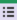

1. Introduction
In Checkmk, notification means that users are actively informed in the case of problems or other events in the monitoring. This is most commonly achieved using emails. However, there are also many other methods, such as sending SMS or forwarding to a ticket system. Checkmk provides a simple interface for writing scripts for your own notification methods.
The starting point for any notification to a user is an event reported by the monitoring core. We call this a monitoring event in the following article to avoid confusion with the events processed by the Event Console. A monitoring event is always related to a particular host or service. Possible types of monitoring events are:
A change of state, e.g. OK → WARN
The change between a steady and an unsteady (flapping) state.
The start or end of a
 scheduled downtime.
scheduled downtime.The
 acknowledgement of a problem by a user.
acknowledgement of a problem by a user.A notification manually triggered by a command.
The execution of an
 alert handler.
alert handler.An event passed for notification from the  Event Console.
Checkmk utilises a rule-based system that allows you to create user notifications from these monitoring events — and this can also be used to implement very demanding requirements. A simple notification by email — which is entirely satisfactory in many cases — is nonetheless quick to set up.
2. To notify, or not (yet) to notify?
Notifications are basically optional, and Checkmk can still be used efficiently without them. Some large organisations have a sort of control panel in which an operations team has the Checkmk interface constantly under observation, and thus additional notifications are unnecessary.
If your Checkmk environment is still under construction, it should be considered that notifications will only be of help to your colleagues when no — or only occasional — false alarms (false positives) are produced. One first needs to come to grips with the threshold values and all other settings, so that all states are OK / UP — or in other words: everything is ‘green’.
Acceptance of the new monitoring will quickly fade if every day the inbox is flooded with hundreds of useless emails.
The following procedure has been proven to be effective for the fine-tuning of notifications:
Step 1: Fine-tune the monitoring, on the one hand, by fixing any actual problems newly uncovered by Checkmk and, on the other hand, by eliminating false alarms. Do this until everything is ‘normally’ OK / UP. See the Beginner’s guide for some recommendations for reducing typical false alarms.
Step 2: Next switch the notifications to be active only for yourself. Reduce the ‘static’ caused by sporadic, short duration problems. To do this, adjust further threshold values, use predictive monitoring if necessary, increase the number of check attempts or try delayed notifications. And of course if genuine problems are responsible, attempt to get these under control.
Step 3: Once your own inbox is tolerably peaceful, activate the notifications for your colleagues. Create efficient contact groups so that each contact only receives notifications relevant to them.
These procedures will result in a system which provides relevant information that assists in reducing outages.
3. Simple notifications by email
An email notification sent by Checkmk in HTML format looks something like this:
As can be seen in the example, the email also contains the current readings for the affected service.
Before you receive such an email from Checkmk, a few preparations are necessary, as are described below.
3.1. Prerequisites
In the default Checkmk configuration, a user will receive notifications per email when the following prerequisites have been satisfied:
The Checkmk server has a functioning setup for sending emails.
An email address is configured for the user.
The user is a member of a contact group, and is therefore a contact.
A monitoring event occurs on a host or service assigned to this contact group, which triggers a notification.
3.2. Setting up mail dispatching in Linux
For the successful sending of emails, your Checkmk server must have a functioning SMTP-server configuration. Depending on your Linux distribution, this could utilise, for example, Postfix, Qmail, Exim, Sendmail or Nullmailer. The configuration will be implemented with your Linux distribution’s resources.
The configuration is generally confined to registering a ‘smarthost’ (also known as an SMTP relay server) to which all emails will be directed. This will then be your firm’s internal SMTP mail server. As a rule smarthosts don’t require authentication in a LAN — which makes matters simple. In some distributions the smarthost will be queried during the installation. With the Checkmk appliance one can configure the smarthost conveniently via the web interface.
You can test the sending of emails easily with the mail command on the command line.
Because there are numerous different implementations for this command under Linux, for standardisation Checkmk provides the version
from the Heirloom mailx project directly in the site user’s search path (as ~/bin/mail).
The corresponding configuration file is ~/etc/mail.rc.
The best way to test this is as a site user, since the notification scripts will later run with the same permissions.
The email’s content is read from the standard input, the subject specified with -s, and the recipient’s address simply appended as an argument to the end of the command line:
OMD[mysite]:~$ echo “content” | mail -s test-subject harry.hirsch@example.comThe email should be delivered without delay.
If this doesn’t work, information can be found in the SMTP server’s log file in the /var/log directory (see files and directories).
3.3. Email address and contact group
A user’s email address and contact group are defined in the user administration:
In a freshly-generated Checkmk site, initially there is only the Everything contact group. Members of this group are automatically responsible for all hosts and services, and will be notified of every relevant monitoring event by email.
Note: If your Checkmk installation has been generated with an older version, this group could also possibly be called Everybody. This is however illogical, as this group doesn’t contain every user, rather it contains all hosts. Apart from the differing names the function is the same.
3.4. Testing
To test the notification you could simply set an OK service to CRIT manually.
This can be done with the command Fake check results, which you can find in the service list in the Commands menu. If the command is not visible in the list, please click the button Show more  once.
once.
This should immediately trigger an email for this problem. At the next regular check the service should revert to OK, thereby triggering a new notification — this time a recovery.
Note that during these tests, by making frequent changes to its state the service will after a while enter the flapping state. Subsequent state changes will no longer trigger notifications. In the Master control snapin on the sidebar you can temporarily deactivate the detection of flapping (Flap Detection).
Alternatively, you can also send a Custom notification — also using a command:
This does not alter the status of the affected service. This generated notification is however of a different type and — depending on your notification rules — it can behave differently.
3.5. Fine-tuning HTML email
When sending HTML emails, you may wish to add additional information or flexibly define a reply address (Reply to) to a specific contact for any queries. For this, there is the Setup > Services > Service monitoring rules > Parameters for HTML Email rule, and in notification rules the HTML email notification method. With these rules you can add a number of parameters such as response address, additional fields with details or free text formatted as HTML.
Note that in the Insert HTML section between body and table field, for security reasons only a small set of HTML tags is allowed. These are:
| Tag | Meaning | Additional information |
|---|---|---|
|
This is permitted if it is combined with the |
|
|
||
|
||
|
||
|
Deprecated, please do not use anymore! |
|
|
||
|
||
|
||
|
Deprecated, please do not use anymore! |
|
|
Spaces and tab stops are shown |
|
|
||
|
||
|
||
|
Only use within these list environments: |
|
|
||
|
As usual with all rules in Checkmk, a very finely granulated application is possible, so that you can individualize a detailed set of notifications to hosts and services as required.
4. Controlling notifications with rules
4.1. The principle
Checkmk is configured ‘by default’ so that when a monitoring event occurs a notification email is sent to every contact for the affected host or service. This is certainly initially sensible, but in practice many further requirements arise, for example:
The suppression of specific, less useful notifications
The ‘subscription’ to notifications from services for which one is not a contact
A notification can be sent by email, SMS or pager, depending on the time of day
The escalation of problems when no acknowledgement has been received beyond a certain time limit
The option of NO notification for the WARN or UNKNOWN states
and much more …
Checkmk offers you maximum flexibility in implementing such requirements via a rule-based mechanism.
You enter the configuration with Setup > Events > Notifications.
Note: When you call up the Notification configuration page for the first time, you will see a warning about the unconfigured "fallback email address". You can ignore this warning for the moment. We will go into this below.
In the notification configuration, you manage the chain of notification rules, which determine who should be notified and how. When any monitoring event occurs this rule chain will be run through from top to bottom. Each rule has a condition that decides whether the rule actually applies to the situation in question.
If the condition is satisfied the rule determines two things:
A selection of contacts (Who should be notified?).
A notification method (How to notify?), e.g. HTML email, and optionally, additional parameters for the chosen method.
Important: In contrast to the rules for hosts and services, here the evaluation also continues after the applicable rule has been satisfied. Subsequent rules can add further notifications. Notifications generated by preceding rules can also be deleted.
The end result of the rule evaluation will be table with a structure something like this:
| Who (contact) | How (method) | Parameters for the method |
|---|---|---|
Harry Hirsch |
|
|
Bruno Weizenkeim |
|
|
Bruno Weizenkeim |
SMS |
Now, for each entry in this table the notification script which actually executes the user notification appropriate to the method will be invoked.
4.2. The initial predefined rule
If you have a freshly-installed Checkmk, precisely one rule will have been predefined:
This rule defines the above-described default behaviour. It is structured as follows:
Condition |
None, i.e. the rule applies to all monitoring events |
Method |
Sends an email in HTML format (with embedded metric graphs) |
Contact |
All contacts of the affected host/service |
As usual, you can edit the rule  , clone (copy) it
, clone (copy) it  , delete it
, delete it  , or create a new rule.
Once you have more than a single rule, you can change their processing order by dragging and dropping them with the icon.
, or create a new rule.
Once you have more than a single rule, you can change their processing order by dragging and dropping them with the icon.
Note: Changes to notification rules do not require activation of the changes, rather they take effect immediately.
4.3. Structure of the notification rules
In the following, we present the general structure of the notification rules with the definitions of general properties, methods, contacts and conditions.
General properties
As with all rules in Checkmk, here you can include a description and a commentary for the rule, or even temporarily deactivate the rule.
The option Overriding by users is activated by default. activated. It allows users to 'unsubscribe' from notifications generated by this rule. We show how to do this with the custom notifications.
Notification method
The notification method specifies the technique to be used for sending the notification., e.g. with HTML email.
Each method is realised using a script. Checkmk includes a number of scripts. You can also quite easily write your custom scripts in any desired programming language in order to implement special notifications — for example, to redirect a notification to your own ticket system.
A method can include parameters — such as allowing the method that sends ASCII and HTML emails to explicitly set the sender’s address (From:) for example.
Before making settings directly in the notification rule, one should know that parameters for the notification methods can also be specified via rules for hosts and services: Under Setup > Services > Service monitoring rules, in the Notifications section, you will find a rule set for each notification method, which you can use to define the same settings — and as usual, can be dependent on the host or service.
Parameter definitions in notification rules enable these settings to be varied in individual cases. So you can, for example, define a global subject for your email, but also define an alternative subject with an individual notification rule.
Instead of parameters you can also select Cancel previous notifications – with which all of this method’s notifications from prior rules will be deleted. For more on this, see the topic deleting notifications.
Note: For the following notification methods for forwarding to other systems, you will find more detailed information in their own separate articles: Jira, Mattermost, PagerDuty, Pushover, Opsgenie, ServiceNow, Slack, Opsgenie, and Cisco Webex Teams
Selecting contacts
The most common procedure is for notifications to be sent to all users who have been registered as a contact for the respective host/service. This is the ‘normal’ and logical procedure, since it is also via the contacts that it is defined which objects each user receives in their GUI display — in effect those objects for which the user is responsible.
You can tick several options in the contact selection and thus extend the notification to more contacts:
Checkmk will automatically delete duplicate contacts. In order for the rule to make sense at least one selection must be made.
The two Restrict by… options function somewhat differently.
Here the contacts selected with the other options will again be restricted.
With these you can also create an AND-operator between contact groups, for example, to enable notifications to be sent to all contacts who are members of both the Linux and Datacenter groups.
By entering Explicit email addresses you can notify persons who are not in fact nominated as users in Checkmk. This of course only makes sense when used in the notification method that actually sends emails.
If, in the chosen method, you have selected Cancel previous notifications, the notifications will only be deleted for the contact selected here.
Conditions
Conditions determine when a rule will be used. For comprehension it is important to remember that the source is always a monitoring event on a concrete host or service.
The conditions address
the object’s static attributes – e.g., whether the service name contains the
/tmptext,with the current state or the change of the state, e.g. whether the service has just changed from OK to CRIT,
or with completely different things, e.g., whether the 'working time’time period is currently active.
There are two important points to consider when setting the conditions:
Without the exception discussed separately below, there are two important things to note here:
If no conditions have been defined the rule will take effect for every monitoring event.
As soon as you select even a single condition, the rule takes effect only if all conditions are met. All selected conditions are linked with AND. There is only one exception to this important rule, which we will discuss later and not consider now.
This means that you should pay very close attention to whether the conditions you have chosen can be met at the same time so that a notification is triggered for the desired case.
Let’s say you want a notification to be triggered when a monitoring event occurs for a service starting with the name NTP on a host in the Main folder:
Suppose further that this condition is now extended by also notifying all state changes of a host to the DOWN state:
The result of this notification rule with the three single conditions is that never a notification will occur, because no monitoring event will contain the state change of a host and the service name with NTP.
The following note is repeated in this User guide from time to time. However, in connection with the configuration of your notifications, it should be emphasized again: Show the context-sensitive help with Help > Show inline help to get details about the effect of the various conditions. The following excerpt from the context-sensitive help for the Match services option illustrates the behavior very well: "Note: Host notifications will never match this rule, if this option is being used.".
The exception to the AND operation
Only if a monitoring event satisfies all configured conditions, the notification rule will apply. As mentioned above, there is one important exception to this general rule: for the Match host event type and Match service event type conditions:
Should you select only Match host event type, the rule will match no single service event. Similarly, this applies to the selection of Match service event type and host events. Should you activate both conditions however, the rule will match if the event type is activated in any of the two checkbox lists. In this exceptional case these conditions will thus not be linked with a logical ‘AND’, but rather with an ‘OR’. In this way you can simply administer host and service notifications with a single rule.
A further tip regarding the Match contacts and Match contact groups conditions:
The condition checked here is whether the host/service in question has a certain contact assignment. This can be used to implement functions such as "Host notifications in the contact group Linux should never be sent by SMS". This has nothing to do with the contact selection described above.
4.4. Cancelling notifications
As already mentioned in the selection of the notification method, you will also find the selection option Cancel previous notifications. In order to be able to understand the functioning of such a rule, it is best to visualise the notification table. Assuming the processing of the rules for a concrete monitoring event is partly complete, and that due to a number of rules the following three notifications have been triggered:
| Who (contact) | How (method) |
|---|---|
Harry Hirsch |
|
Bruno Weizenkeim |
|
Bruno Weizenkeim |
SMS |
Now comes a next rule with the SMS method and the Cancel previous notifications selection. The contact selection chooses the 'Windows' group, in which Bruno Weizenkeim is a member. As a result of this rule, the entry 'Bruno Weizenkeim / SMS' is removed from the table, which then looks like this:
| Who (contact) | How (method) |
|---|---|
Harry Hirsch |
|
Bruno Weizenkeim |
Should a subsequent rule again define an SMS notification for Bruno, then this rule will have priority and the SMS will be added anew to the table.
To summarise:
Rules can suppress (delete) specific notifications.
Deletion rules must come after the rules that create the notifications.
A deletion rule does not actually ‘delete’ a preceding rule, rather it suppresses the notifications that are generated by (possibly multiple) preceding rules.
Subsequent rules can reinstate the previously suppressed notifications.
4.5. What happens if no rule is applicable?
One who configures can also make errors. One possible error in the notification configuration could be that a critical monitoring problem is discovered, but not a single notification rule takes effect.
To protect you from such a case, Checkmk offers the setting Fallback email address for notifications. This can be found under Setup > General > Global settings in the section Notifications. Enter an email address here. This email address will then receive notifications for which no notification rule applies.
Note: Alternatively, you can also make a user the recipient in his personal settings. The email address stored with the user is used as the fallback address.
The fallback address will however only be used if no rule applies, not when no notification has been triggered! As we showed in the previous chapter, the explicit suppression of notifications is desired — it is not a configuration error.
The entry of a fallback address will be ‘recommended’ on the Notification configuration page with an onscreen warning:
If you don’t want to use the fallback address, simply add a new rule as the first rule that deletes all preceding notifications. This rule is ineffective on the notification configuration, as no notifications have been created here yet. But with this you can ensure that at least one rule will always apply, thus allowing this warning to be eliminated.
5. Custom notifications
5.1. Overview
A useful feature in Checkmk’s notification system is the one with which users — even without administrator rights — can customise notifications. Users can:
Add notifications they would not otherwise receive (‘subscribe’)
Delete notifications they would otherwise receive (if not restricted)
Customise notification parameters
Completely disable their notifications altogether
5.2. Custom notification rules
The entry point from the user’s point of view is the User menu, and there the entry Notification rules. On the Your personal notification rules page, a new rule can be created with Add rule.
Custom rules are structured like the normal rules — with one difference: they do not contain a contact selection. The user himself is automatically selected as the contact. This means that a user can only add or delete notifications for himself.
However, the user can only delete notifications if the allow users to deactivate this notification option is activated in the rule that creates them:
In the order of notification rules, the custom rules always come after the global rules and so can adjust the notification table that has been generated so far. So, except for the deletion blocking just described, the global rules always apply as the default setting that can be customised by the user.
If you want to prevent customisation altogether, you can revoke the permission General Permissions > Edit personal notification settings of the user role.
As an administrator, you can display all user rules if in the menu you select Display > Show user rules:
After the global rules, the user rules are listed, which you can also edit with  .
.
5.3. Temporarily disabling notifications
The complete disabling of notifications by a user is protected with the permission General Permissions > Disable all personal notifications, which is set to no for the user role user by default.
A user will only see the corresponding checkboxes in his personal settings if you explicitly assign this right to the user role:
As an administrator with access to the user’s personal settings, you can carry out disablement actions on the user’s behalf — even if the permission as described above is not present. You can find this setting under Setup > Users > Users and then in the properties of the user profile. With this, for example, you can very quickly silence a holidaying colleague’s notifications — without needing to alter the actual configuration.
6. When notifications are generated and how to deal with them
6.1. Introduction
A large part of the Checkmk notification system’s complexity is due to its numerous tuning options, with which unimportant notifications can be avoided. Most of these will be situations in which notifications are already being delayed or suppressed when they occur. Additionally, the monitoring core has a built-in intelligence that suppresses certain notifications by default. We would like to address all of these aspects in this chapter.
6.2. Scheduled downtimes
When a host or service is in a scheduled downtime the object’s notifications will be suppressed. This is – alongside a correct evaluation of availabilities — the most important reason for the actual provision of downtimes in monitoring. The following details are relevant to this:
If a host is flagged as having a scheduled downtime, then all of its services will also be automatically in scheduled downtime – without an explicit entry for them needing to be entered.
Should an object enter a problem state during a scheduled downtime, when the downtime ends as planned this problem will be retroactively notified precisely at the end of the downtime.
The beginning and the end of a scheduled downtime is itself a monitoring event which will be notified.
6.3. Notification periods
You can define a notification period for each host and service during configuration. This is a time period which defines the time frame within which the notification should be constrained.
The configuration is performed using the Monitoring Configuration > Notification period for hosts, or respectively the Notification period for services rule set, which you can quickly find via the search in Setup menu.
An object that is not currently in a notification period will be flagged with a grey pause icon  .
.
Monitoring events for an object that is not currently in its notification period will not be notified. Such notifications will be ‘reissued’ when the notification period is again active – if the host/service is still in a problem state. Only the latest state will be notified even if multiple changes to the object’s state have occurred during the time outside the notification period.
Incidentally, in the notification rules it is also possible to restrict a notification to a specific time period. In this way you can additionally restrict the time ranges. However, notifications that have been discarded due to a rule with time conditions will not automatically be repeated later!
6.4. The state of the host on which a service is running
If a host has completely failed, or is at least inaccessible to the monitoring, then obviously its services can no longer be monitored. Active checks will then as a rule register CRIT or UNKNOWN, since these will be actively attemping to access the host and will thereby run into an error. In such a situation all other checks — thus the great majority — will be omitted and will thus remain in their old state. These will be flagged with the stale time icon .
It would naturally be very cumbersome if all active checks in such a state were to notify their problems. For example, if a web server is not reachable – and this has already been notified – it would not be very helpful to additionally generate an email for every single one of its dependent HTTP services.
To minimise such situations, as a basic principle the monitoring core only generates notifications for services if the host is in the UP state. This is also the reason why host accessibility is separately verified. If not otherwise configured, this verification will be achieved with a Smart Ping or ping.
 If you are using the Raw Edition (or one of the Enterprise Editions with a Nagios core), in isolated cases it can nonetheless occur that a host problem
generates a notification for an active service.
The reason for this is that Nagios regards the results of host checks as still being valid for a short time into the future.
If even only a few seconds have elapsed between the last successful ping to the server and the next active check, Nagios can still assess the host as UP even though it is in fact DOWN.
In contrast, the Checkmk Micro Core (CMC) will hold the service notification in a ‘standby’ mode until the host state has been verified, thus reliably minimising undesired notifications.
If you are using the Raw Edition (or one of the Enterprise Editions with a Nagios core), in isolated cases it can nonetheless occur that a host problem
generates a notification for an active service.
The reason for this is that Nagios regards the results of host checks as still being valid for a short time into the future.
If even only a few seconds have elapsed between the last successful ping to the server and the next active check, Nagios can still assess the host as UP even though it is in fact DOWN.
In contrast, the Checkmk Micro Core (CMC) will hold the service notification in a ‘standby’ mode until the host state has been verified, thus reliably minimising undesired notifications.
6.5. Parent hosts
Imagine that an important network router to a company location with hundreds of hosts fails. All of its hosts will then be unavailable to the monitoring and become DOWN. Hundreds of notifications will therefore be triggered. Not good.
In order to avoid such problems the router can be defined as a parent host for its hosts. If there are redundant hosts, multiple parents can also be defined. As soon as all parents enter a DOWN state, the hosts that are no longer reachable will be flagged with the UNREACH state and their notifications will be suppressed. The problem with the router itself will of course still be notified.
 By the way, the CMC operates internally in a slightly different manner to Nagios.
In order to reduce false alarms, but still process genuine notifications, it pays very close attention to the exact times of the
relevant host checks.
If a host check fails the core will wait for the result of the host check on the parent host before generating a notification.
This wait is asynchronous and has no effect on the general monitoring.
Notifications from hosts can thereby be subject to minimal delays.
By the way, the CMC operates internally in a slightly different manner to Nagios.
In order to reduce false alarms, but still process genuine notifications, it pays very close attention to the exact times of the
relevant host checks.
If a host check fails the core will wait for the result of the host check on the parent host before generating a notification.
This wait is asynchronous and has no effect on the general monitoring.
Notifications from hosts can thereby be subject to minimal delays.
6.6. Disabling notifications using rules
With the Enable/disable notifications for hosts, or respectively, the Enable/disable notifications for services rule sets you can specify hosts and services for which generally no notifications are to be issued. As mentioned above the core then suppresses notifications. A subsequent notification rule that ‘subscribes’ to notifications for such services will be ineffective, as the notifications are simply not generated.
6.7. Disabling notifications using commands
It is also possible to temporarily disable notifications for individual hosts or services via a command.
However, this requires that the permission Commands on host and services > Enable/disable notifications is assigned to the user role. By default, this is not the case for any role.
With the assigned permission, you can disable (and later enable) notifications from hosts and services with the Commands > Notifications command:
Such hosts or services will then be marked with an icon.
Since commands — in contrast to rules — require neither configuration permissions nor an activate changes, they can be a quick workaround for reacting promply to a situation.
Important: In contrast to  scheduled downtimes, disabled notifications have no influence on the availability evaluations.
If during an unplanned outage you really only want to disable the notifications without wishing to distort the availability statistics,
you should not register a scheduled downtime!
scheduled downtimes, disabled notifications have no influence on the availability evaluations.
If during an unplanned outage you really only want to disable the notifications without wishing to distort the availability statistics,
you should not register a scheduled downtime!
6.8. Disabling notifications globally
In the Master control snapin in the sidebar you will find a master switch for Notifications:
This switch is incredibly useful if you plan to make bigger system changes, during which an error could under the circumstances force many services into a CRIT state. You can use the switch to avoid upsetting your colleagues with a flood of useless emails. Remember to re-enable the notifications when you are finished.
Each site in a distributed monitoring has one of these switches. Switching off the central site’s notifications still allows remote sites to activate notifications — even though these are directed to and delivered from the central site.
Important: Notifications that would have been triggered during the time when notifications were disabled will not be repeated later when they are re-enabled.
6.9. Delaying notifications
You may possibly have services that occasionally enter a problem state for short periods, but the stops are very brief and are not critical for you. In such cases notifications are very annoying, but are easily suppressed. The Delay host notifications and Delay service notifications rule sets serve this situation.
You specify a time in minutes here — and a notification will be delayed until this time has expired. Should the OK / UP state occurs again before then, no notification will be triggered. Naturally this also means that the notification of a genuine problem will be delayed.
Obviously even better than delaying notifications would be the elimination of the actual cause of the sporadic problems — but that is of course another story…
6.10. Repeated check attempts
Another very similar method for delaying notifications is to allow multiple check attempts when a service enters a problem state. This is achieved with the Maximum number of check attempts for hosts, or respectively, the Maximum number of check attempts for service rule set.
If you set a value of 3 here, for example, a check with a CRIT result will at first not trigger a notification.
This is referred to as a CRIT soft state.
The hard state remains OK.
Only if three successive attempts return a not-OK-state will the service switch to the hard state and a notification be triggered.
In contrast to delayed notifications, here you have the option of defining views so that such problems are not displayed. A BI aggregate can also be constructed so that only hard states are included — not soft ones.
6.11. Flapping hosts and services
When a host or service frequently changes its state over a short time it is regarded as flapping. This is an actual state. The principle here is the reduction of excessive notifications during phases when a service is not (quite) running stably. Such phases can also be specially evaluated in the availability statistics.
Flapping objects are marked with the icon. As long as an object is flapping, successive state changes trigger no further notifications. A notification will however be triggered whenever the object enters or leaves the flapping state.
The system’s recognition of flapping can be influenced in the following ways:
The Master control has a main switch for controlling the detection of flapping (Flap Detection).
You can exclude objects from detection by using the Enable/disable flapping detection for hosts, or respectively, the Enable/disable flapping detection for services rule set.
In the
 Checkmk Enterprise Editions, using Global settings > Monitoring Core > Tuning of flap detection you can define the parameters for flapping detection and set them to be more or less sensitive:
Checkmk Enterprise Editions, using Global settings > Monitoring Core > Tuning of flap detection you can define the parameters for flapping detection and set them to be more or less sensitive:
Show the context sensitive help with Help > Show inline help for details on the customizable values.
6.12. Periodically-repeated notifications and escalation
For some systems, it can make sense not to leave it to a single notification when a problem persists over a longer time frame, for example, for hosts whose host tag Criticality is set to Business critical.
Set up periodically-repeated notifications
Checkmk can be set up so that successive notifications are issued at fixed intervals, until either the problem has been  acknowledged or solved.
acknowledged or solved.
The setting for this can be found in the Periodic notifications during host problems, or respectively, the Periodic notifications during service problems rule set:
Once this option is active, for a persistent problem, Checkmk will trigger regular notifications at the configured intervals. These notifications will receive an incrementing number beginning with 1 (for the initial notification).
Periodic notifications are not only useful for reminding about a problem (and annoying the operator), they also provide a basis for escalations — meaning that after a defined time a notification can be escalated to other recipients.
Set up escalations and understand them
To set up an escalation, create an additional notification rule which uses the Restrict to notification number condition.
If you enter 3 to 99999 as the range for the sequential number, this rule takes effect from the third notification. The escalation can then be performed either by selecting another method, (e.g., SMS), or it can notify other persons (contact selection).
With the Throttle periodic notifications option, after a given time the rate of notification repetition can be reduced so that, for example, in the beginning an email can be sent every hour, and later this can be reduced to one email per day.
With multiple notification rules, you can build an escalation model. But how will this escalation then function in practice? Who is notified and when? Here is an example, implemented with one rule for periodically repeated notifications as well as three notification rules: For example:
In the event of a problem being detected in a service, a notification in the form of an email will be triggered every 60 minutes until the problem is either resolved or acknowledged.
Notifications one to five go to the two people responsible for the service.
Notifications six to ten are also sent to the relevant team leader.
From notification eleven on, a daily mail goes to the company management instead.
At 9 o’clock in the morning, a problem occurs at the facility. The two responsible employees are notified of the problem but do not respond (for whatever reason). So at 10, 11, 12 and at 1 p.m. they each receive new emails. From the sixth notification at 2 p.m., the team leader now also receives an email — nevertheless, the problem still does not change. At 3, 4, 5 and 6 p.m., further emails are sent to the team members and the team leader.
At 7 p.m., the third escalation level takes effect: From now on, no more e-mails are sent to the team members or the team leader. Instead, the company management now receives an email every day at 7 p.m. until the problem is resolved.
As soon as the problem has been fixed and the service in Checkmk goes back to OK, an 'all clear' is automatically sent to the last notified group of people: So in the example above, if the problem is fixed before 2 p.m., to the two team members; if the problem is fixed between 2 and 7 p.m., to the team members and the team leader; and after 7 p.m., only to the company management.
7. The path of a notification from beginning to end
7.1. The notification history
To get started, we will show you how to view the history of notifications at the host and service level in Checkmk to be able to track the notification process.
A monitoring event that causes Checkmk to trigger a notification is, for example, the change of state of a service. You can manually trigger this state change with the command Fake check results for testing purposes, as we have already shown in the chapter on the testing of a simple notification by email.
For a notification test, you can move a service from the OK state to CRIT in this way. If you now display the notifications for this service on the service details page with Service > Service Notifications, you will see the following entries:
The most recent entry is at the top of the list. However, the first entry is at the bottom, so let’s look at the individual entries from bottom to top:
The monitoring core logs the monitoring event of the state change. The icon in the 1st column indicates the state (CRIT in the example).
The monitoring core generates a raw notification. This is passed by the core to the notification module, which performs the evaluation of the applicable notification rules.
The evaluation of the rules results in a user notification to the user
hhwith the methodmail.The notification result shows that the email was successfully handed over to the SMTP server for delivery.
To help in the correct understanding of the contexts for all of the various setting options and basic conditions, and to enable an accurate problem diagnosis when a notification appears or does not appear as expected, here we will describe all of the details of the notification process including all of the components involved.
Note: The notification history that we have shown above for a service can also be displayed for a host: on the host details page in the Host menu for the host itself (Notifications of host menu item) and also for the host with all its services (Notifications of host & services).
7.2. The components
The following components are involved in the Checkmk notification system:
| Component | Function | Log file |
|---|---|---|
Nagios |
The monitoring core in the |
|
The monitoring core in the Enterprise Editions that performs the same function as Nagios in the |
|
|
Notification module |
Processes the notification rules in order to create a user notification from a raw notification. It calls up the notification scripts. |
|
Notification spooler (Enterprise Editions only) |
Asynchronous delivery of notifications, and centralised notifications in distributed environments. |
|
Notification script |
For every notification method there is a script which processes the actual delivery (e.g., generates and sends an HTML email). |
|
7.3. The monitoring core
Raw notifications
As described above, every notification begins with a monitoring event in the monitoring core.
If all conditions have been satisfied and a ‘green light’ for a notification can be given, the core generates a raw notification to the internal check-mk-notify help contact.
The raw notification doesn’t yet contain details of the actual contacts or of the notification method.
The raw notification looks like this in the service’s notification history:
The icon is a light-grey loudspeaker
check-mk-notifyis given as the contact.check-mk-notifyis given as the notification command.
The raw notification then passes to the Checkmk notification module, which processes the notification rules.
This module is called up as an external program by Nagios (cmk --notify).
The CMC on the other hand keeps the module on standby as a permanent auxiliary process (notification helper), thus reducing process-creation and saving machine time.
Error diagnosis in the Nagios monitoring core
 The Nagios core used in the
The Nagios core used in the  Checkmk Raw Edition logs all monitoring events to
Checkmk Raw Edition logs all monitoring events to ~/var/log/nagios.log.
This file is simultaneously the location where it stores the notification history — which is also queried using the
GUI if, for example, you wish to see a host’s or service’s notifications.
More interesting however are the messages you find in the ~/var/nagios/debug.log file which you receive if you set the debug_level
variable to 32 in etc/nagios/nagios.d/logging.cfg.
Following a core restart …
OMD[mysite]:~$ omd restart nagios… you will find useful information on the reasons notifications were created or suppressed:
[1592405483.152931] [032.0] [pid=18122] ** Service Notification Attempt ** Host: 'localhost', Service: 'backup4', Type: 0, Options: 0, Current State: 2, Last Notification: Wed Jun 17 16:24:06 2020
[1592405483.152941] [032.0] [pid=18122] Notification viability test passed.
[1592405485.285985] [032.0] [pid=18122] 1 contacts were notified. Next possible notification time: Wed Jun 17 16:51:23 2020
[1592405485.286013] [032.0] [pid=18122] 1 contacts were notified.Error diagnosis in the CMC monitoring core
 In the
In the  Checkmk Enterprise Editions you can find a protocol from the monitoring core in the
Checkmk Enterprise Editions you can find a protocol from the monitoring core in the ~/var/log/cmc.log log file.
In the standard installation this file contains no information regarding notifications.
You can however activate a very detailed logging function with Global settings > Monitoring Core > Logging of the notification mechanics.
The core will then provide information on why — or why not (yet) — a monitoring event prompts it to pass a notification to the notification system:
OMD[mysite]:~$ tail -f var/log/cmc.log
+2021-08-26 16:12:37 [5] [core 27532] Executing external command: PROCESS_SERVICE_CHECK_RESULT;mysrv;CPU load;1;test
+2021-08-26 16:12:43 [5] [core 27532] Executing external command: LOG;SERVICE NOTIFICATION: hh;mysrv;CPU load;WARNING;mail;test
+2021-08-26 16:12:52 [5] [core 27532] Executing external command: LOG;SERVICE NOTIFICATION RESULT: hh;mysrv;CPU load;OK;mail;success 250 - b'2.0.0 Ok: queued as 482477F567B';success 250 - b'2.0.0 Ok: queued as 482477F567B'Note: Turning on logging to notifications can generate a lot of messages. It is however useful when one later asks why a notification was not generated in a particular situation.
7.4. Rule evaluation by the notification module
Once the core has generated a raw notification, this runs through the chain of notification rules – resulting in a table of notifications. Alongside the data from the raw notification, every notification contains the following additional information:
The contact to be notified
The notification method
The parameters for this method
In a synchronous delivery, for every entry in the table an appropriate notification script will now be executed. In an asynchronous delivery a notification will be passed as a file to the notification spooler.
Analysis of the rule chain
When you create more complex rule regimes the question of which rules will apply to a specific notification will certainly come up. For this Checkmk provides a built-in analysis function on the Notifications configuration page, which you can reach with the Display > Show analysis menu item.
In the analysis mode, by default the last ten raw notifications generated by the system and processed through the rules will be displayed:
Should you need to analyze a larger number of raw notifications, you can easily increase the number stored for analysis via Global settings > Notifications > Store notifications for rule analysis:
For each of these raw notifications three actions will be available to you:
Tests the rule chain, in which every rule will be checked if all conditions for the rule have been satisfied for the selected monitoring event. The resulting table of notifications will be displayed with the rules. |
|
Displays the complete notification context. |
|
|
Repeats this raw notification as if it has just appeared. Otherwise the display is the same as in the analysis. With this you can not only check the rule’s conditions, but also test how a notification looks visually. |
Error diagnosis
If you have performed the rule chain test (), you can see which rules have been applied or have not been applied to a monitoring event:
If a rule was not applied, move the mouse over the gray circle to see the hint (mouse-over text):
However, this mouse-over text uses abbreviations for the causes a rule was not applied. These refer to the Match host event type or Match service event type conditions of the rule.
| Host event types | ||
|---|---|---|
Abbreviation |
Meaning |
Description |
rd |
UP ➤ DOWN |
Host status changed from UP to DOWN |
ru |
UP ➤ UNREACHABLE |
Host status changed from UP to UNREACH |
dr |
DOWN ➤ UP |
Host status changed from DOWN to UP |
du |
DOWN ➤ UNREACHABLE |
Host status changed from DOWN to UNREACH |
ud |
UNREACHABLE ➤ DOWN |
Host status changed from UNREACH to DOWN |
ur |
UNREACHABLE ➤ UP |
Host status changed from UNREACH to UP |
?r |
any ➤ UP |
Host status changed from any status to UP |
?d |
any ➤ DOWN |
Host status changed from any status to DOWN |
?u |
any ➤ UNREACHABLE |
Host status changed from any status to UNREACH |
f |
Start or end of flapping state |
|
s |
Start or end of a scheduled downtime |
|
x |
Acknowledgement of problem |
|
as |
Alert handler execution, successful |
|
af |
Alert handler execution, failed |
|
| Service event types | ||
|---|---|---|
Abbreviation |
Meaning |
Description |
rw |
OK ➤ WARN |
Service status changed from OK to WARN |
rr |
OK ➤ OK |
Service status changed from OK to OK |
rc |
OK ➤ CRIT |
Service status changed from OK to CRIT |
ru |
OK ➤ UNKNOWN |
Service status changed from OK to UNKNOWN |
wr |
WARN ➤ OK |
Service status changed from WARN to OK |
wc |
WARN ➤ CRIT |
Service status changed from WARN to CRIT |
wu |
WARN ➤ UNKNOWN |
Service status changed from WARN to UNKNOWN |
cr |
CRIT ➤ OK |
Service status changed from CRIT to OK |
cw |
CRIT ➤ WARN |
Service status changed from CRIT to WARN |
cu |
CRIT ➤ UNKNOWN |
Service status changed from CRIT to UNKNOWN |
ur |
UNKNOWN ➤ OK |
Service status changed from UNKNOWN to OK |
uw |
UNKNOWN ➤ WARN |
Service status changed from UNKNOWN to WARN |
uc |
UNKNOWN ➤ CRIT |
Service status changed from UNKNOWN to CRIT |
?r |
any ➤ OK |
Service status changed from any status to OK |
?w |
any ➤ WARN |
Service status changed from any status to WARN |
?c |
any ➤ CRIT |
Service status changed from any status to CRIT |
?u |
any ➤ UNKNOWN |
Service status changed from any status to UNKNOWN |
Based on these hints you can check and revise your rules.
Another important diagnostic option is the log file ~/var/log/notify.log.
During tests with the notifications, the popular command tail -f is useful for this:
OMD[mysite]:~$ tail -f var/log/notify.log
2021-08-26 17:11:58,914 [20] [cmk.base.notify] Analysing notification (mysrv;Temperature Zone 7) context with 71 variables
2021-08-26 17:11:58,915 [20] [cmk.base.notify] Global rule 'Notify all contacts of a host/service via HTML email'...
2021-08-26 17:11:58,915 [20] [cmk.base.notify] -> matches!
2021-08-26 17:11:58,915 [20] [cmk.base.notify] - adding notification of hh via mail
2021-08-26 17:11:58,916 [20] [cmk.base.notify] Executing 1 notifications:
2021-08-26 17:11:58,916 [20] [cmk.base.notify] * would notify hh via mail, parameters: smtp, graphs_per_notification, notifications_with_graphs, bulk: noWith Global settings > Notifications > Notification log level you can control the comprehensiveness of the notifications in three levels. Set this to Full dump of all variables and command, and in the log file you will find a complete listing of all of the variables available to the notification script:
For example, the list will appear like this (extract):
2021-08-26 17:24:54,709 [10] [cmk.base.notify] Raw context:
CONTACTS=hh
HOSTACKAUTHOR=
HOSTACKCOMMENT=
HOSTADDRESS=127.0.0.1
HOSTALIAS=localhost
HOSTATTEMPT=1
HOSTCHECKCOMMAND=check-mk-host-smart7.5. Asynchronous delivery via the notification spooler
 A powerful supplementary function of the Enterprise Editions is the notification spooler.
This enables an asynchronous delivery of notifications.
What does asynchronous mean in this context?
A powerful supplementary function of the Enterprise Editions is the notification spooler.
This enables an asynchronous delivery of notifications.
What does asynchronous mean in this context?
Synchronous delivery: The notification module waits until the notification script has finished executing. If this takes a long time to execute, more notifications will pile up. If monitoring is stopped, these notifications are lost. In addition, if many notifications are generated over a short period of time, a backlog may build up to the core, causing the monitoring to stall.
Asynchronous delivery: Every notification will be saved to a spool file under
~/var/check_mk/notify/spool. No jam can build up. If the monitoring is stopped the spool files will be retained and notifications can later be delivered correctly. The notification spooler takes over the processing of the spool files.
A synchronous delivery is then feasible if the notification script runs quickly, and above all can’t lead to some sort of timeout. With notification methods that access existing spoolers that is a given. Spool services from the system can be used particularly with email and SMS. The notification script passes a file to the spooler — with this procedure no wait state can occur.
When using the traceable delivery via SMTP or other scripts which establish network connections, you should always employ asynchronous delivery. This also applies to scripts that send text messages (SMS) via HTTP over the internet. The timeouts when building a connection to a network service can take up to several minutes, causing a jam as described above.
The good news is that asynchronous delivery is enabled by default in Checkmk.
For one thing, the notification spooler (mknotifyd) is also started when the site is started, which you can check with the following command:
OMD[mysite]:~$ omd status mknotifyd
mknotifyd: running
-----------------------
Overall state: runningOn the other hand, asynchronous delivery (Asynchronous local delivery by notification spooler) is selected in Global settings > Notifications > Notification Spooling:
Error diagnosis
The notification spooler maintains its own log file: ~/var/log/mknotifyd.log.
This possesses three log levels which can be set under Global settings > Notifications > Notification Spooler Configuration with the Verbosity of logging parameter.
In the middle level, Verbose logging (i.e. spooled notifications), the processing of the spool files can be seen:
2021-08-26 18:05:02,928 [15] [cmk.mknotifyd] processing spoolfile: /omd/sites/mysite/var/check_mk/notify/spool/dad64e2e-b3ac-4493-9490-8be969a96d8d
2021-08-26 18:05:02,928 [20] [cmk.mknotifyd] running cmk --notify --log-to-stdout spoolfile /omd/sites/mysite/var/check_mk/notify/spool/dad64e2e-b3ac-4493-9490-8be969a96d8d
2021-08-26 18:05:05,848 [20] [cmk.mknotifyd] got exit code 0
2021-08-26 18:05:05,850 [20] [cmk.mknotifyd] processing spoolfile dad64e2e-b3ac-4493-9490-8be969a96d8d successful: success 250 - b'2.0.0 Ok: queued as 1D4FF7F58F9'
2021-08-26 18:05:05,850 [20] [cmk.mknotifyd] sending command LOG;SERVICE NOTIFICATION RESULT: hh;mysrv;CPU load;OK;mail;success 250 - b'2.0.0 Ok: queued as 1D4FF7F58F9';success 250 - b'2.0.0 Ok: queued as 1D4FF7F58F9'8. Bulk notifications
8.1. Overview
Everyone who works with monitoring has experienced an isolated problem setting off a veritable flood of (successive) notifications. The principle of the parent hosts is a way of reducing these under specific circumstances, but unfortunately it doesn’t help in all cases.
You can take an example from the Checkmk project itself: Once each day we build Checkmk installation packages for every supported Linux distribution. Our own Checkmk monitoring is set up so that we have a service that is then only OK if the right number of packages have been correctly constructed. It can occasionally happen that a general error in the software hampers the packaging, causing 43 services to go into a CRIT state simultaneously.
We have configured the notifications in such a way that in such a case only a single email listing all 43 notifications in sequence will be sent. This is naturally clearer than 43 single emails, and it also reduces the risk that ‘in the heat of the battle’ one misses a 44th email belonging to quite another problem.
The mode of operation of this bulk notification is very simple. When a notification occurs, at first it will be held back for a short time. Subsequent notifications that occur during this time will be immediately added into the same email. This collecting can be defined for each rule. So, for example, during the day you can operate with individual emails, but overnight with a bulk notification. If a bulk notification is activated you will generally be offered the following options:
The waiting time can be configured as desired. In many cases one minute suffices as by then at the latest all related problems should have appeared. You can of course set a longer time, but that will result in a fundamental delay to the notifications.
Since it naturally makes no sense to throw everything into a single pot, you can specify which groups of problems should be notified collectively. The Host option is very commonly used — this ensures that only notifications from the same host are bundled.
Here are a few additional facts about bulk notifications:
If the bundling is activated in a rule, the activation can be deactivated by a subsequent rule – and vice versa.
The bulk notification always takes place per contact. Each contact has their own 'private collection pot' in effect.
You can limit the size of the pot (Maximum bulk size). Once the maximum is reached the bulk notification will immediately be sent.
8.2. Bulk notifications and time periods
What happens when a notification is within the notification period, but the bulk notification that contains it — and which comes somewhat later — is outside the notification period? The reverse situation is also possible…
Here a very simple principle applies: all configurations that restrict notifications to time periods are valid only for the actual notification. The subsequent bulk notification will always be delivered independently of all time periods.
9. Traceable delivery per SMTP
9.1. Email is not reliable
 Monitoring is only useful when one can rely on it.
This requires that notifications are received reliably and promptly.
Unfortunately email delivery is not completely ideal however.
The despatch is usually processed by passing the email to the local SMTP server.
This attempts to deliver the email autonomously and asynchronously.
Monitoring is only useful when one can rely on it.
This requires that notifications are received reliably and promptly.
Unfortunately email delivery is not completely ideal however.
The despatch is usually processed by passing the email to the local SMTP server.
This attempts to deliver the email autonomously and asynchronously.
With a temporary error (e.g., a case where the receiving SMTP server is not reachable) the email will be put into a queue and a later a new attempt will be made. This ‘later’ will as a rule be after 15-30 minutes. By then the notification could be far too late!
If the email really can’t be delivered the SMTP server creates a nice error message in its log file and attempts to generate an error email to the ‘sender’. But the monitoring system is not a real sender and also cannot receive emails. It follows that such errors simply disappear and notifications are then absent.
Important: Traceable notifications are not available for bulk notifications!
9.2. Using SMTP on a direct connection enables error analysis
The  Checkmk Enterprise Editions provide the possibilty of a traceable delivery via SMTP.
This it intentionally does without the help of the local mail server.
Instead Checkmk itself sends the email to your smarthost via SMTP, and then it evaluates the SMTP response itself.
Checkmk Enterprise Editions provide the possibilty of a traceable delivery via SMTP.
This it intentionally does without the help of the local mail server.
Instead Checkmk itself sends the email to your smarthost via SMTP, and then it evaluates the SMTP response itself.
In this way, not only are SMTP errors treated intelligently, but a correct delivery is also precisely documented. It is a bit like a registered letter: Checkmk receives a receipt from the SMTP smarthost (receiving server) verifying that the email has been accepted — including a mail ID.
9.3. Synchronous delivery for HTML emails
You can select and configure the tracable delivery via SMTP for the notification method HTML email by entering the smarthost (with name and port number) and the access data and encryption method:
In the history of the service concerned, you can then track the delivery exactly. Here is an example in which a service — for testing purposes — was manually set to CRIT. The screenshot below shows the notifications for this service, which you can display on the service details page with Service > Service Notifications:
Here you will see the four individual steps in the chronological sequence from bottom to top, as we have already presented them in the chapter on notification history.
The important difference is that now you can see in the topmost entry that the email was successfully delivered to the smarthost and its response is success.
You can also follow the individual steps in the notify.log file.
The following lines belong to the last step and contain the response of the SMTP server:
2021-08-26 10:02:22,016 [20] [cmk.base.notify] Got spool file d3b417a5 (mysrv;CPU load) for local delivery via mail
2021-08-26 10:02:22,017 [20] [cmk.base.notify] executing /omd/sites/mysite/share/check_mk/notifications/mail
2021-08-26 10:02:29,538 [20] [cmk.base.notify] Output: success 250 - b'2.0.0 Ok: queued as 1BE667EE7D6'The Message-ID 1BE667EE7D6 will appear in the smarthost’s log file.
There — if you are concerned — you can investigate where the email has gotten to.
In any case you can prove that, and when, the email was correctly sent from Checkmk.
Let us repeat the test from above, but this time with a falsely-configured password for the SMTP transfer to the smarthost.
Here you can see in plain text the SMTP error message Error: authentication failed from the smarthost:
What can be done about failed notifications? Again, notifying by email is apparently not a good solution. Instead Checkmk shows a clear warning with red background colour in the Overview:
Here you can:
Click on the text … failed notifications for a list of the failed deliveries.
Click on the
 icon to confirm these messages and remove the notice by clicking on
icon to confirm these messages and remove the notice by clicking on  Confirm in the overview that opens.
Confirm in the overview that opens.
Important: Note that direct delivery per SMTP in error situations can lead to a notification script running for a very long time and lead to a timeout. For this reason you are strongly advised to use the notification spooler and to select an asynchronous delivery of notifications.
The conduct with repeatable errors (such as an SMTP timeout) can be defined with Global settings > Notifications > Notification spooler configuration per notification method:
Alongside an optional timeout (the default is 1 minute) and a maximum number of retries, it can also be defined whether the script is permitted to run multiply in parallel and thus send multiple notifications (Maximum concurrent executions). If the notification script is very slow a parallel execution can make sense — however the script must be so-programmed that multiple executions run cleanly (and, for example, that the script doesn’t reserve certain data for itself).
A multiple, parallel delivery over SMTP is unproblematic since the target server can manage multiple parallel connections. This is certainly not the case when delivering directly from SMS via a modem without an additional spooler, and here one should stick with the setting 1.
9.4. SMS and other notification methods
A synchronous delivery including error messages and traceability has to date only been implemented for HTML emails. How one can return an error status in a self-written notification script can be found in the chapter on writing your own scripts.
10. Notifications in distributed systems
In distributed environments — i.e., those with more than a single Checkmk site — the question arises of what to do with notifications generated on remote sites.
In such a situation there are basically two possibilities:
Local delivery
Central delivery on the central site (Enterprise Editions only)
Detailed information on this subject can be found in the article on distributed monitoring.
11. Notification scripts
11.1. The principle
Notification can occur in manifold and individual ways. Typical examples are:
Transfer of notifications to a ticket, or external notification system
The sending of an SMS over various internet services
Automated telephone calls
Forwarding to a higher, umbrella monitoring system
For this reason Checkmk provides a very simple interface which enables you to write your own notification scripts. These can be written in any Linux-supported programming language — even though Shell, Perl and Python together have 95% of the ‘market’.
The standard scripts included with Checkmk can be found in ~/share/check_mk/notifications.
This directory is a component of the software and is not intended to be changed.
Instead, save your own scripts in ~/local/share/check_mk/notifications.
Ensure that your scripts are executable (chmod +x).
They will then be found automatically and made available for selection in the notification rules.
Should you wish to customise a standard script, simply copy it from ~/share/check_mk/notifications to ~/local/share/check_mk/notifications and there make your changes in the copy.
If you retain the original name, your script will be substituted automatically for the standard version and no changes will need to be made to the existing notification rules.
Some more sample scripts are included with the software in ~/share/doc/check_mk/treasures/notifications.
You can use these as templates for customisation.
The configuation will generally take place directly in the script — tips covering this can be found there in the comments.
In the case of a notification your script will be called up with the site user’s permissions.
In environment variables, (those that begin with NOTIFY_), it will receive all of the information about the affected host/service, the monitoring event, the contacts to be notified, and the parameters specified in the notification rule.
Texts that the script writes to the standard output (with print, echo, etc.), appear in the notification module’s log file ~/var/log/notify.log.
11.2. Traceable notifications
Notification scripts have the option of using an exit code to communicate whether a replicable or final error has occurred:
| Exit code | Function |
|---|---|
|
The script was successfully executed. |
|
A temporary error has occurred. The execution should after a short wait be repeatedly reattempted, up until the configured maximum number of attempts has been reached. Example: an HTTP connection cannot be established with an SMS service. |
|
A final error has occurred. The notification will not be reattempted. A notification error will be displayed in the GUI. The error will be displayed in the host’s/service’s history. Example: the SMS service records an 'invalid authentification' error. |
Additionally, in all cases the standard output from the notification script, together with the status will be entered into the host’s/service’s notification history and will therefore be visible in the GUI.
Important: Traceable notifications are not available for bulk notifications!
 The treatment of notification errors from the user’s point of view will be explained in the chapter on traceable delivery via SMTP.
The treatment of notification errors from the user’s point of view will be explained in the chapter on traceable delivery via SMTP.
11.3. A simple sample script
As an example you can create a script that writes all of the information about the notification to a file. The coding language is the Bash Linux shell:
#!/bin/bash
# Foobar Teleprompter
env | grep NOTIFY_ | sort > $OMD_ROOT/tmp/foobar.out
echo "Successfully written $OMD_ROOT/tmp/foobar.out"
exit 0Then make the script executable:
OMD[mysite]:~$ chmod +x local/share/check_mk/notifications/foobarHere are a couple of explanations concerning the script:
In the first line is a
#!and the path to the script language’s interpreter (here/bin/bash).In the second line after the comment character
#is a title for the script. As a rule this will be shown when selecting the notification method.The
envcommand will output all environment variables received by the script.With
grep NOTIFY_the Checkmk variables will be filtered out …… and sorted alphabetically with
sort.> $OMD_ROOT/tmp/foobar.outwrites the result to the~/tmp/foobar.outfile within the site directory.The
exit 0would actually be superfluous in this location since the shell always takes the exit code from the last command. Here this isechoand is always successful — but explicit is always better.
11.4. Testing the sample script
So that the script will be used you must define it as a method in a notification rule.
Self-written scripts have no parameter declaration, therefore all of the checkboxes such as those offered, for example, in the HTML Email method, will be missing.
Instead you can enter a list of texts as parameters that can be available as NOTIFY_PARAMETER_1, NOTIFY_PARAMETER_2, etc, to the script.
For a test provide the parameters Fröhn, Klabuster and Feinbein:
Now to test, set the service CPU load on the host myserver to CRIT — with the command Fake check results as described above.
In the log file of the notification module ~/var/log/notify.log you then see the execution of the script including parameters and the generated spool file.:
2021-08-25 13:01:23,887 [20] [cmk.base.notify] Executing 1 notifications:
2021-08-25 13:01:23,887 [20] [cmk.base.notify] * notifying hh via foobar, parameters: Fröhn, Klabuster, Feinbein, bulk: no
2021-08-25 13:01:23,887 [20] [cmk.base.notify] Creating spoolfile: /omd/sites/mysite/var/check_mk/notify/spool/e1b5398c-6920-445a-888e-f17e7633de60The file ~/tmp/foobar.out will now contain an alphabetic list of all Checkmk environment variables that include information concerning the notification.
Here you can orient yourself with which values are available to your script.
Here are the first ten lines:
OMD[mysite]:~$ head tmp/foobar.out
NOTIFY_ALERTHANDLERNAME=debug
NOTIFY_ALERTHANDLEROUTPUT=Arguments:
NOTIFY_ALERTHANDLERSHORTSTATE=OK
NOTIFY_ALERTHANDLERSTATE=OK
NOTIFY_CONTACTALIAS=Harry Hirsch
NOTIFY_CONTACTEMAIL=harryhirsch@example.com
NOTIFY_CONTACTNAME=hh
NOTIFY_CONTACTPAGER=
NOTIFY_CONTACTS=hh
NOTIFY_DATE=2021-08-25The parameters can also be found:
OMD[mysite]:~$ grep PARAMETER tmp/foobar.out
NOTIFY_PARAMETERS=Fröhn Klabuster Feinbein
NOTIFY_PARAMETER_1=Fröhn
NOTIFY_PARAMETER_2=Klabuster
NOTIFY_PARAMETER_3=Feinbein11.5. Environment variables
In the above example you have seen a number of environment variables that will be passed to the script.
Precisely which variables will be available will depend on the type of notification and also on the Checkmk version and edition being used.
Alongside the trick with the env command there are two further ways of getting a complete list of all variables:
Changing up the log level for
notify.logvia Global settings > Notifications > Notification log level.For notifications per HTML Email there is a checkbox Information to be displayed in the email body with the Complete variable list (for testing) option.
Below is a list of the most important variables:
| Environment variable | Meaning |
|---|---|
|
Home directory of the site, e.g., |
|
Site name, e.g., |
|
For host notifications, the word |
|
User name (login) of the contact. |
|
The email address of the contact. |
|
Entry in the Pager field in the contact’s user profile. Since the field is not generally reserved for a specific purpose, you can simply use it for each user in order to save information required for notifications. |
|
Date of the notification in ISO-8601-Format, e.g., |
|
Date and time in the non-localised Linux system’s default display, e.g., |
|
Date and time in ISO-Format, e.g. |
|
Name of the affected host. |
|
Output of the host check’s check plug-in, e.g., “ |
|
One of the words: |
|
Notification type as described in the introduction to this article. This will be expressed by one of the following words: |
|
All of the script’s parameters separated by blanks. |
|
The script’s first parameter. |
|
The script’s second parameter, etc. |
|
Name of the service concerned. This variable is not present in host notifications. |
|
Output of the service check’s check plug-in (not for host notifications) |
|
One of the words: |
11.6. Bulk notifications
If your script should support bulk notifications, it will need to be specially prepared, since the script must deliver multiple notifications simultaneously. For this reason a delivery using environment variables also doesn’t function practicably.
Give your script a name in the third line in the header as below — the notification module will then send the notifications through the standard input:
#!/bin/bash
# My Bulk Notification
# Bulk: yesThrough the standard input the script will receive blocks of variables.
Each line has the form: NAME=VALUE.
Blocks are separated by blank lines.
The ASCII character with the code 1 (\a) is used to represent newlines within the text.
The first block contains a list of general variables (e.g., call parameters). Each subsequent block assembles the variables into a notification.
The best recommendation is to try it yourself with a simple test that writes the complete data to a file so that you can see how the data is sent. You can use the following notification script for this purpose:
#!/bin/bash
# My Bulk Notification
# Bulk: yes
cat > $OMD_ROOT/tmp/mybulktest.outTest the script as described above and additionally activate the Notification Bulking in the notification rule.
11.7. Supplied notification scripts
As delivered, Checkmk already provides a whole range of scripts for connecting to popular and widely used instant messaging services, incident management platforms and ticket systems. You can find out how to use these scripts in the following articles:
12. Files and directories
12.1. Paths of Checkmk
| File path | Function |
|---|---|
|
The CMC log file. If notification debugging ist activated, here you will find precise information as to why notifications were, or were not generated. |
|
The notification module’s log file. |
|
The notification spooler’s log file. |
|
The current status of the notification spooler. This is primarily relevant for notifications in distributed environments. |
|
The Nagios debug log file. Switch on the debug messages in |
|
Storage location for the spool files to be processed by the notification spooler. |
|
With temporary errors the notification spooler moves the files to here and retries after a couple of minutes. |
|
Defective spool files will be moved to here. |
|
Notification scripts supplied as standard with Checkmk. Make no changes here. |
|
Storage location for your custom notification scripts. If you wish to customise a standard script, copy it from |
|
Other notification scripts which you can slightly customise and use. |
12.2. SMTP server log files
The SMTP server’s log files are system files and their absolute paths are listed here below. Precisely where the log files are stored will depend on your Linux distribution.
| Path | Function |
|---|---|
|
SMTP-server’s log file under Debian and Ubuntu |
|
SMTP-server’s log file under SUSE Linux Enterprise Server (SLES) |
|
SMTP-server’s log file under Red Hat Enterprise Linux (RHEL) |